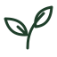

The NuTerra Project
NuTerra brings five projects together to preserve useful knowledge, build technology people can maintain, and develop communities that can endure.
Explore the five pillars
The Ecosystem
Five Pillars. One Purpose.
-

SOURCE
InformationA shared record for collecting, checking, and preserving information.
-
NuMind
KnowledgePractical knowledge people can learn, use, and pass on.
-

VATRA
SocietyA plan for communities that can provide more of their own essentials.
-
DEUS ORDO
PeoplePeople who build, maintain, and protect.
-

VIO
TechnologyLocal computing, AI, and automation people can maintain.
Start with one handoff
Can someone use a guide when the internet is down and its author is unavailable? Try the offline handoff checklist and see what each pillar contributes.
See the handoff project